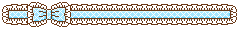

12/18/25 8:20 AM

owie owie owie. i was a stupid idiot and sprained my finger whilst harassing twin. i guess karma finally caught up to me. anyways im sad because i was gonna finish making christmas gifts for everyone i hadn't already made something for, but i can't squeeze my pliers very vell or pick up tiny beads. its also hard to type fast and accurately, since i normally do touch typing but thats not an option when two of my fingers are taped together. im just gonna leave it taped till i have to perform later. whatever, at least i can give people the super middle finger now. still hurts a lot though. i guess will have to just be more careful when harassing ppl now.
12/19/25 8:29 AM

what a happy joyous silly awesomesauce day. my finger is only a little bit hurting, it's rainign and i love when it rains because i love my umbrella, and i'm going home today (: i also bought christmas presents for my family last night, but still have 70 dollars left.
1/7/27 9:27 PM

i dont have anything interesting to say tonight. i did just eat a very scrumdiddlyumptious salad. it was lettuce with no stupid purple things, cesar dressing, trail mix that had almonds, walnuts, pecans, pepitas, sunflower seeds, craisins, then some crushed up sunchips, and reheated chicken from tacos. mixed all up. vv yummy. goodnight !!
1/9/26 9:19 AM
doing lots of pretty updates to the site rn ! images might not load for the next couple hours as I work and change things and get rid of ugly stuff, but the site will look super cutie when im all done ! if u actually read my stupid blogs you deserve a little kissy. mwah tysm for listening. mwah. ty. ilysm.
1/10/26 9:41 PM

what a lovely day for me (: got to sit at the basketball game with ppl i care about, played in the rain, got into warm cosy clothes, went shopping, ate fast food, and now i get to make cute little changes to my site ! i created and animated the little dropdown icons and im so proud of them ! im going to tippy tappy type some more and hopefully start adding tiny pixels to each blog timestamp, possibly change this page's bg, and then will go to sleep not too late so im not tired tommorrow. how lovely ! i am so happy today.
1/11/26 4:53 PM

what is up my sillies ! im sure if you haven't visited yet theres some new stuff! namely layout, scrollbars, cursors, etc etc ! there's even a new page otw and im very excited. ive been thinking maybe i should reorder these blogs, with newest entries at the top? and then should i keep all logs or delete them at a certain capacity? ive also considered adding a view counter on the site. theres one on my neocities acc but one on the site might be nice, maybe? working very hard to get the sote looking and working better becuase i love my silly club for my silly friends. mwahhhhhh !!
1/12/26 2:56 PM
i changed my mind i feel totally better now ! nobody hates me and i don't suck at everything. i actually had a great day. i gave ppl presents which i love, im working on the next page, im gonna do ok on the geometry final, and i ate a yummy salad today, which breaks my streak of eating nothing but noodles and toast all weekend. improvement !! im going to go home and maybe take a nap bc im a little sleepy. then tonight i'll study, download more music, maybe mess with the next page, and read. my day is not bad at all actually.
1/12/26 8:40 AM
today im going graphics shopping to add more images and blinkies to the site. i love looking for them and collecting them but honestly hate inserting images SOOOOOO much. its tedious and i have to command+shift+r the hell out of my browser every other minute. i need to study today or im gonna die. idk wtf a sin cos tan is. im gonna do so bad on the geometry final im so finished. finals make my stomach hurt because im nervous. also county band auditions. arguably more stressful than finals. ive onky got one ok recording. i think i should just submit it and accept theres no shot of me getting in. i hate recording myself so much. it makes me so nervous and i can't do anything i practiced. i was doing so well with it when i was practicing it myself, but as soon as the camera turns on i suck. i feel like maybe i should just quit. im never going to be as good as my section leader, and they were way better than me even at my age. i suck at my instrument. next year all my friends are graduating, and i feel like the director kinda doesn't like me, and my section leader said i'd be a terrible section leader, and i feel like i just suck. i think everyone else thinks that too but they're being nice to me because i'm retarded. i don't feel good at all right now. this is the worst time of year. christmas and new years are over and there's nothing to look forward to until spring. i asked my grandpa to please take me home for at least one weekend and he's considering it. i just feel so poorly at this time of year. boredom makes me really sad. rambling now so im just gonna go add images to my site. at least i have a cute site.
1/13/26 9:48 AM
stupid smelly evil finals ew. hate hate hate. i got an 83 on my gym final, a 92 on my computer science final, then i have math today as well. gonna review stuff during third period for that. yuck i hate finals. so evil. so yucky. hate. gabel gave u s new music. some is hard some is easy-ish. i had brass quintet, after school i have brass ensemble, the at 6 i have guitar. which i need to bring MY guitar to because the high e string blew clean off the guitar. it wasn't from tuning either so they're probs just old and worn out. if that one is worn i probably need all new ones. maybe i can convince horning that i have NOOOO idea how to change them so he'll do it for me while i sleep in the hallway. im so tired. will probably be super duper tired by then. mash bowl for lunch though which is good. it doesn't feel like tuesday, the week is kinda dragging already. i hate the stupid fences outside. wdym to get to the building thats 50 ft away i need to walk a quarter mile ugh i hate the stupid school for paying the construction ppl by the hour. you know full well they're going to drag this out all year. and im mad because its cold and i don't want to trek the appalachian trail and sail the seven seas to get from hammond to fisher. so stupid. anyways working on the new page, probs by the weekend it'll be up. i'll still be making chanegs like i do for all the pages, but i'd like it to be up. the button for it is going to be hidden so only those of you that actually lurk and scour the site can find it. it's supposed to be like a dump of my nerd interests because i'm an obsessive autistic loser tranny with no job and unlimited free time. im wondering if i should take web design next year? im half thinking i'll enjoy and learn from it, but im also afraid it'll be way to base level and i'll be bored out of my mind if i already know the material? it could be an easy a though so im def considering it. not in an arrogant way, im obviously not the best webdev ever, and have no backend knowledge, but idk how in depth or detailed it'll be just for a high school elective. if anyone has taken the class lmk how it is.
1/14/26 12:14 PM

i feel really lame today. i left my spray bottle at the sh today, and my hair has gone flat and i look super stupid, it's touching my forehead and is sensory hell, but looks stupider when i try to move it away. i have no afterschool activities today, so im going to put my hair up after fifth period, hide my stupid self under my umbrella and walk home. i'll put it in a bandana then so it stops touching me. i hate being autistic and wish i was bald. if my family wasn't transphobic i'd just buzz it. very annoyed today with my stupid hair. and i have to deal with it during my test next period. i feel like a stupid chud. overall a bad day for bugg. now that im done whining, im somewhat satisfied with the state of the next page abd might link it to a secret button. my next project after that will be a fortune cookie. i will not elaborate.
1/15/26 9:21 AM
guess who's NOT a loser chud and made it to county band? me me its me!! im actually so pleasantly suprised. i turned in that video, pretty much giving up and acceptign i wouldn't make it, but i got a 70.0/100 and made 4th trumpet, second chair. is this dead last? yes. is it better than i expected? very much yes. how lovely.1/15/26 1:44 PM
I JUST MADE THE COOLEST THING EVERRRRRRRRRRRRRRRRRRRRRRRRRRRRR! i have a functioningn digital fortune cookie! when you hover it has a golden glow, when you click it opens the cookie and gives you a message! gonna add more messages but im so proud of it! yay!
1/16/26 9:14 AM
now that the cookie is done im kind of bored. tried embedding a white board to the site but everything sucks or isn't working. im kind of lost on ideas now that ive got so much i wanted to do out of the way. i can try to fix the homepage navbar, but even that's dull. i'll probably look at some other sites for inspo today. maybe i can add maxwell's minecraft paintings. probably work with my same image changing animation i made for the other page and just use a transparent image as the second image instead of another solid one. i think i'll make a new page for that. but then layout. i absolutely abhor making layouts. so much so i actually used a premade template for the secret page. whatever. something something indie web sharing spirit etc etc. i'll probably just mash images into a grid and put ascii images behind them by just making divs or something with text inside and putting images with a higher z index on top. it sounds ok theoretically but it's going to get really annoying, repetitive, and tedious reallt fast. my tummy hurts and i just want it to be the weekend so i can rot and eat and sleep like the unemployed chudling i am.
1/16/26 1:35 PM
i might have gotten my first website commision/art trade kind of? it's not a settled deal yet, but very exciting nonetheless. if this works out and doesn't burn me out into oblivion, i may consider taking commissions for real. it'll give me something to do and be rewarding, so if it all works out well it could be a decent side hustle. first project though has to be making an archive page for all my old blog entries. because there's too many 0: !
1/18/26 2:44 PM
feeling really lame and not great today. won't be many updates. it's seasonal and i'll be alr eventually, just need time. there's a link where im gonna move old blog entries, as well as reordering these ones. nothing fun so check another day. sorry to be bland but just not feeling well
1/18/26 9:33 PM
link is up on the sidebar for old entires. gonna keep this page limited to ten for better load times and stuff.
1/19/26 9:08 AM
cold cold cold cold cold. very cold. however im finally done with this blasted semester but ofc we're the only school that still has class today, yeah just casually ignoring that it's a federal holiday. whatever. im absolutely starving today? and for once i ate this morning.
1/19/26 8:37 PM
something i should really work on is not assuming everyone hates me and that im a loser at any minor inconveinence. thats probably not how you spell that.but maybe i should idk do less? of everything? the only way i avoid the seasonal sad is by not letting myself have a spare moment to think about anything, but i think that overloading myself with projects and making them super public in hopes it'll keep me accountable is actually just making me burnt out and irritable. i got upset with some of my close friends today, and reacted poorly to an irritant i can normal handle, and ive been noticing it a lot lately. i think with the new semester i should focus more on a few set, solid goals every week rather than doing everything always all the time without breaks. i'm proud of my site, but it's not feeling fun right now. it might be time for a break soon. that doesn't mean full stop no edits, but it might mean slowing down a lot. i especially need to stop putting quotas for new content on myself. this is meant to be slower paced. treating this like a content farm defeats the point. whatever maybe im rambling.
1/21/26 7:27 PM
not many updates lately. been very busy with the new semester and very tired. maybe some more contetnt when i'm more accustomed to my new schedule and workload.
1/26/26 9:19 PM
hello hello hello. i got my belly button pierced! it hurt! but im so swag now! also my guitar finally got shipped. thinking about making an alien themed page for the site? is that lame? idk i like aliens. might even experiment with some hand drawn graphics. ive got some stored up that might be super cute. but that means graphic shopping which means some space between updates to the site. whatever it's my site and i dont have a quota to meet!
1/28/26 9:19 PM
i've been slacking lately with updates. its ok cuz i have lots of other things to work on. scholastic art and wrinting awards came out today. i got two honorable mentions and one silver. i should be happy i won anyting at all with the poor quality work i submitted, but it is what it is. its nowhere near last year's level. i was kinda sad and got lazy around the deadline. it is what it is i guess. its embaarrassing though.
1/29/26 9:20 PM
the unemployment jokes are kinda funny, but im actually really eager to work. i hope i get hired. i need money to save for top surgery, plus just money in general. someone somehow tried to use my card to buy something on amazon, and it was ok cuz it declined, but it declined a 20 dollar purchase because there was only a dollar in my account. it worked out fine and i locked the card, but that's highkirkenuinely so pathetic ): to whatever broke ass who tried to steal from me, sorry we're in the same boat ):
1/30/26 10:07 AM
its cold. and im always hungry in the mornings because my houseparents stopped cooking breakfast, which is bad. i used to get scrambled eggs twice a week, and no al li get is rice crispies and cinnamon toast. i am so sad and hungry. also i hate stupid teachers that think theyre funny. you are UNFUNNY and SMELLY and please leave me alone. i am tired and will not be doing anything today except play my instrument and go home because i am tired. maybe if someone i care about is going to the basketball game, i will take a brief nap and go there. however i am tired and annoyed. and kids are mean. the kids in chemistry laugh at me when i answer the questions. why do they do that? i answer all of them correctly and i dont laugh at them when they answer wrong. and they're always wrong because they are super stupid and smelly. i hate evil juniors. frowny face.
2/6/26 9:17 AM

hello guys. went on hiatus for like a week but we're back!! i get really sad and nervous in the wintertimes so i might be slower with updates until spring. things are ok enough right now that im back to work! speaking of work, i got a job! and passed my swim test! yay yay yippee!!! also stopped drinkng coffee for a while which is helping with the nervousness. im not doing great but im choosing to be silly and happy as i can. whenever i get sad y friends also get sad which is not good. so im super locked in!! very sleepy without coffee though. trying my very best because i love my friends very much. working on an alien themed page and an about me page as well! yay! these will occupy my time and hopefully keep me busy enough to not get sad till spring. spring is great bc its sunny. not being able to play outside makes me sad. last year wasn't so bad because i had musical to keep me busy. job though! money up funny down! ok my funny is still up. i hope it gets springy soon!!!!
2/9/26 12:32 PM
cooking up some lovely updates! new pages are still in progress but layouts are done and the pages themselves are linked on buggs corner. this is the most productive ive been in almost a month. hopefully the happy stays with me so i don't start slacking again. seasonal depression is a BITCHHHHHHHHHHHHHH ARGHHHHHHHHHH GO AWAY
2/10/26 8:38 PM
today is a jolly day! maybe tommorow will be jollier!!! ive finished making my valentines gift for my potential valentine. she made me something as well!!! i hope she says yes to my proposition. thank you universe for coming together to create pretty girls ohmigawsh. shes making me cookies and something else she said. i got her some chocolates and made her a stuffed heart with dried lavender so it smelss nice and i sewed it up its very cute. and it's got a wire swirly. so cutie. and a bracelt i made her with red which is her favorite color. woah thank jeezus for pretty girls. ohmygawsh. going home tmmrw yayyy!!1!! much love to my silly web lurkers. a kiss!! mwah!!!2/11/26 10:00 AM
TODAY IS NOT JOLLY BECAUSE I FRIGGIN FORGOT TO GRAB HER THING ON THE WAY OUT UGHHHHH AND I LEFT MYSELF LIKE A THOUSAND REMINDERS UGHHHHHHHHHHHHHHHHHHHHHHHHHHHHHHHHHHH however! she did give me the gifts she made me and they are so cute!!! and she left me the sweetest note!! and the prettiest drawings!!! gawsh!! by golly! she said its alr that i forgot but i feel like such a dumb chud. i had it IN MY HANDS ugh. so evil. my houseparents rushed us all out for no freaking reason im so annoyed. leeyar said she'd deliver it but i want to do it today!! i was so excited. im mad at myself.
2/17/26 8:17 AM
what a jolly day! nothing bad has happened to me yet! yay!
2/19/26 9:16 AM
what's up geeks!! i've been renovating this page (: its pink snakeskin and cool now. the old one was starting to fry my eyeballs with how bubblegum blue it was. overall having an extremely mediocre day. made some sketties to eat tmmrw. got county band tmmrw and saturday. gonna be super tired after tommorrow but im still gonna go to the game afterwards. it ends at 4 and i gotta go to the game at 7. will prbs take a little sleepy nap b4 i go. jeepers, what a long week. much love to you nerds that acc read this. hearts. love love love yous.
2/22/26 12:34 PM

hellur freakz. im in the midst of writing my stupid gilgamesh essay. lowkenuinely feel like im in hell though because idk i just cant sit down and do tasks. i was working in the basement and it was going great until the whole student home decided they wanted to come down there and play ps4 games at maximum volume. so i left and im in a boring chair which makes it hard to do the task and my hps are chatting up a storm so theres nowhere quiet to work. its due tommorow and this highkey upsetting. i want to get it done but i can't work unless im in the very specific environment that lets me get stuff done and its so frustrating. i put a hard deadline of getting back to work at 2pm but idk. i cant work in my room bc im not allowed. and my housemates are so loud. music was working but then got distracting. i hate this. im gonnsa work so hard just for my teacher to hate my essay anyways. i should drop out of school or at least honors. like ik i can do it, i have the highest reading psat score in my grade and probably top 3 in the school. im not stupid but this makes me feel really dumb. and it's so easy for kids that i know aren't as smaret as me to just sit down and get work done.
2/24/26 8:20 AM
i posted the site on my main story. traffic went up which is cool.friendly reminder not to put dumb shit in my guestbook or your ip is getting leaked. most of you are normal so im not worried about it. anyways i wrote my essay and its ok i guess. its hard to write a good essay when its not something i care about. still working on the poem library, also just not feeling passionate abt it rn. i've got onboarding today and hopefully can hang out with my girlfriend tonight at the basketball game.
2/26/26 10:28 AM
i changed the logo (: i think i won't delete the vector one, since i might find a place for it, but i like the simple cd one, it's cleaner and cuter. vector was fun to make but not my favorite looks-wise. it one in like a 60 something to 40 something percent for votes. i counted my girlfriend's opinion as three votes because i like her three times as much as you guys, sorry. she's just super duper freaking awesomesauce. anyways onboarding got rescehduled again, that sucks, but site traffic has seen a significant increase. the visitor counter on the homepage ive seen is kinda buns, my actual hit count when i look at the site's stats are way higher. either way thank you for the interaction, and as much as i hate begging, if you really love club bugg, it would mean a lot to the site's future if you donated a dollar! if i collected a total of five dollars a month, i could build a custom music player, get a custom domain name, improve the chatbox, add more to the site, use abobe fonts with my increased bandwidth, etc etc! obviously don't donate if you're eating like a meager mouse every night, but if you can spare a dollar, anything would help! one day my goal is to get my own domain so i can learn backend, seo, etc etc, stuff i can't do with neocities. anyways my shameless begging session is over. as usual, much love to my lurkers, have a silly day :P!!
3/1/26 5:18 PM
spring is coming! and i had my girlfriend over! and we made brownies and watched shrek! then i walked her home! my life is great!
3/2/26 8:22 AM

i NEED it to be springtime right freaking NOW its cold and stupid ): !!!! i gotta practice tonight, one for a guaranteed solo, two for a possible but unlikely but maybe solo, three for just excersises. i also need to fill out the lesson scholarship application. ill do that today. i didn't write in here about saturday, but i had fun (: me, twin, ivan, and two other dudes went out to film for jowen's video. i brought the camcorder and camera, and it was very fun. im considering buying my own camcorder because i really liked recording and playing around with it. fun!! :D
3/5/26 7:57 PM
too tired to write, just wanted to log that the site is back up. mwah.
3/8/26 6:16 PM
im having an awful day. i had to come back to the sh. everyone's being loud. i feel like i suck at everything. and for some reason, everytime i let anyone other than me cut my hair, they give me the same fuckass bob or some shitty little pixie cut. and both make me look ugly and like a girl.
3/9/26 8:18 AM

hey so its not actually that bad :D i was way overreacting, plus today is good! im putting press ons on owen next period. instead of slowen, i will now call him howen. cuz like. hes a young ho now. get it? no? ok. but i also get to see my super awesome swagtastic magnificent girlfriend which makes me so jolly (: !!!!!! yay! happy day for bugg.
3/11/26 8:17 AM

so how the freak do you telll if someone is upset in general or upset at you? and what does one do in either of these situations? i feel really dumb and unhelpful rn. besides that, we got rita's last night and i got cherry. yummy. im working on a page for design 101, and i got permission to host it on a personal domain, so it'll be on here! as usual it's gonna be unlinked till i like how it's looking, so stay tuned or whatever! mwah.
3/13/26 10:22 AM
hello hello hello! i am having a jolly day. yesterday was SUPER DUPER evil, but im much happier today. im not sad about the transphobic girls because they are loser bitches and i am a swag dude. i am awesomesauce and they are nothingburgers. im so happy!!
3/15/26 9:22 AM
no updates until my suffering and agony subsides sorry
3/18/26 10:22 AM
hey im alive!!! and they let me out of the health center!!! yippeeeee!! i get to see my pretty girlfriend today and im so excited! my fever early broke tuesday morning, but then came back. it finally was gone by yesterday afternoon. when i got there it was 104.2 !! i thought i was totally dying. im alive though!!!!! yayyyy!
3/19/26 11:15 AM
what's up guys ): my lungs and chest hurt rlly bad rn. probs flu related but it sucks. i couldnt play my instrument in band today. not fun. all medical did was give me ibprofen (spelling?) and applesauce. it helped a bit but not much. i'm just happy i get to code for a grade. i added a little css animation to make a tooltip pop up on the nav icons in the new page, and i love it so much. i might add it elsewhere on my site in my free time since it's just so cute!! it'd make a cute speech bubble, i think. which gives me loads of ideas!!!! let me think......3/23/26 12:31 PM
ughhhh! had to break a lot of links today. it's gonna be such a pain putting them all back. i just commented them out to keep anything questionable off my site since im using certain parts for an assignment. i guess the blog link is still on the homepage, and i wont take that off for the three people that read my gay little blog. so if my teacher is that invested in my digital diary, she could find it, i suppose. theres nothing bad on here, but i didn't wanna advertise this page, even if it's really cute.3/25/26 8:23 AM
hello!!! im going to be adding some javascript things to the site, hopefully. its gonna be super frustrating because i actually suck at js, but i wanna learn and get better. unfortunantly its not nearly as fun as html and css, so its hard to want to learn. ive been doing freeCodeCamp and stuff and looking at lots of tuts, but its honestly just so boring. js is not fun. die die die js. ):
3/26/26 8:15 AM

hello guys. today is sad. i didn't play very well in quintet which makes me sad. then i dropped my trumpet and everyone hates me now which makes me really sad. then my friend got mad at me which made me more sad. i feel like a super stupid idiot guy. at least i can go home tommorrow and not tak to anyone except my dog. i might cook him a chicken breast because he is such a good baby and deserves a little treat sometimes. i wanna go home and pet my dog. that would make me happy and less sad. i love my dog.
3/27/26 12:59 PM

they are satan. i pray a meteor comes and blows them to smithereens.
3/30/26 8:19 AM

hey guys!!!!! im so jolly!! i got to go home, make soup, and pet ozzy! ozzy is my dog. he's one years old and an australian shepherd. i am so happy! i get to go home again soon! and i saw my awesome girlfriend today!!! yipeee! hooray!!! huzzah!!!! yahooo!1! my life is so awesomesaucem!!!
4/1/26 8:21 AM

hiiii!!! its spring break day!!! yippeeee!
4/13/26 8:23 AM

hello hello hello!! im back! my spring break was super duper lovely! i cooked some soup and cleaned my whole house! i also got to have an easter egg hunt! i also got my motorcycle permit!!! yippeee!!!! ive gotta look for a motorcycle now! im thinking of either a honda supercub or a honda grom! yayyyyy! and also since teams chat got cut off, feel free to use the cbox. love you guys!!
4/21/26 8:25 AM
today SUCKS ):<<<<<< everything is EVIL and i hate EVERYTHING. my student home is out of coffee, my hair looks bad, my socks feel weird, people in band are mean, and i suck at my instrument. and my trumpet hates me and spewed black oil on me so i was late to class trying to clean up, and i didnt have time to eat breakfast. and i made so many mistakes in quintet today. when professor man comes he will hate me, just like my sectionmate hates me and probably my band director too. my life is POOP!!! and i am very sad and angry. i am going to unleash my laser beam of hatred upon this cruel world as punishment for all the sadness they have cast upon my once jovial heart. nobody will be spared from the photon beam of my frustration. and i am not even allowed to tell my best friend because he is married to the rascal that torments me.
to clarify i do not have a laser nor do i plan to fry anybody. i am just having an awful day.
4/22/26 8:19 AM
we reached 8000 views!! yayyy!!!! im pretty happy today despite having a very evil day yesterday. my houseparents are def getting fired once i tell the HLA abt this!!!! yayyyy!!!! anyways i made brownies for my awesome gorjus girlfriend !!! shes the goat i wish i could make her infinity brownies...
4/23/26 10:46 AM
ive entirely given up. i dont enjoy playing the trumpet anymore. its impossible to when every time i make a mistake they're always pointing it out. when i succeed even the slightest bit they're right there to point out what i couldve done bette or try to sabotage me. i can't bring myself to just play anymore without stressing out about the slightest imperfections in my playing. ive choked everytime we rehearse the solo, not because i don't know it. i'm a competent player. but how can i do well when the poke me, critisize me, try to break my focus, and then yell at me when i mess up. i finally told them to just leave me alone, and they couldnt even give me that. i told the teacher i dont want the solo anymore. its not worth them trying to psych me out everytime. if they wanted to bully me out of it i guess theyve gotten what they want now. they've taken all the enjoyment out of band. they've made my best friend so distant. they've taken away all my confidence in playing. they're graduating this year but i don't even feel relieved. i just don't want to play anymore. they've ruined everything for me. i cant even be mad at my friend but i feel so stupid. i shouldve told them to rot in hell when it started in sixth grade. i can't begin to understand why they've done this, but they've succeeded. i give up.
4/24/26 10:38 AM

i hope you guys liked knowing me because it's WRAPS. they are going to EVISCERATE me. my friends reported them for bullying. im so dead. im really afraid this impact my friendship with my friend who's dating them. it's over for bugg. love you guys. put me in the miku themed coffin when they get me pls.